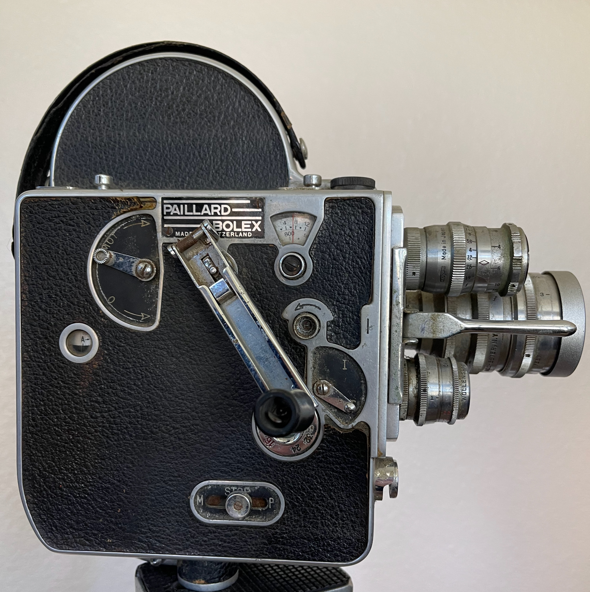
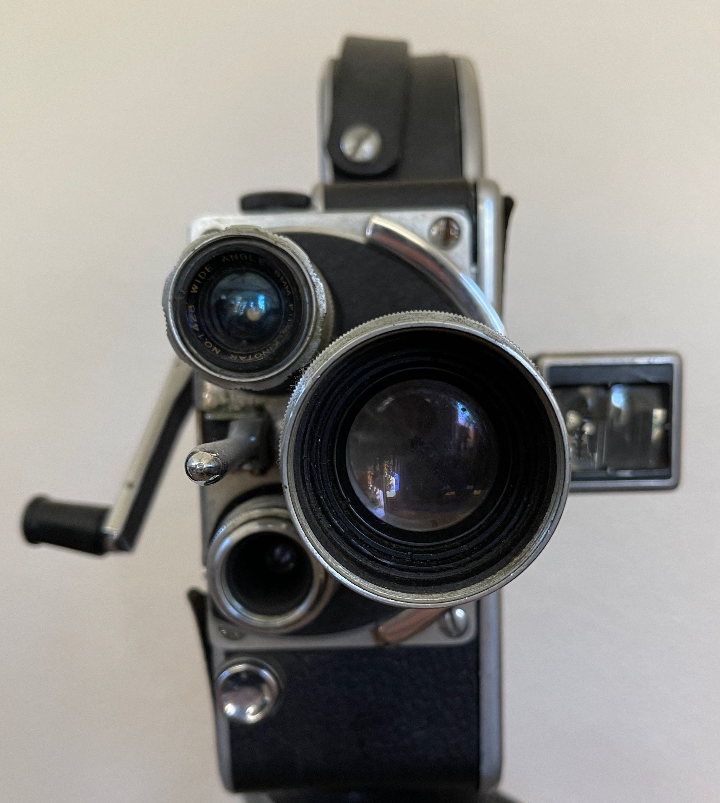

The Equipment
Here are some photos of the original equipment that was used to both record and project the film!
1939 Kodascope Eight-71 Projector
iPhone 8 Plus and iPhone 12 Pro Max
Originally shot on Swiss Bolex H 16
Original beaded screen


